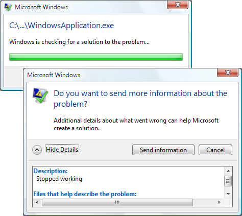
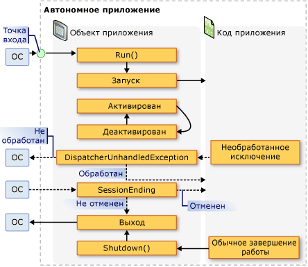

Общие сведения об управлении приложением
Все приложения имеют тенденцию совместно использовать общий набор функциональных возможностей, который применяется к реализации приложения и управлению им. В этом разделе представлен обзор функциональных возможностей класса Application для создания приложений и управления ими.
Класс Application
В WPF функциональные возможности, относящиеся к области приложения, инкапсулируются классом Application. Класс Application включает следующие функциональные возможности:
отслеживание и взаимодействие со временем существования приложения;
извлечение и обработка параметров командной строки;
обнаружение необработанных исключений и реагирование на них;
совместное использование свойств и ресурсов области приложения;
управление окнами в автономных приложениях;
отслеживание навигации и управление ею.
Выполнение стандартных задач с помощью класса приложения
Если вас не интересуют все аспекты класса Application, в следующей таблице перечислены некоторые из наиболее распространенных задач Application и способах их выполнения. Чтобы получить дополнительные сведения и примеры кода, просмотрите связанные API и разделы.
| Задача | Подход |
|---|---|
| Получение объекта, представляющего текущее приложение | Используйте свойство Application.Current. |
| Добавление заставки в приложение | См. в разделе Добавление в WPF-приложение экрана-заставки. |
| Запуск приложения | Воспользуйтесь методом Application.Run. |
| Остановка приложения | Используйте метод Shutdown объекта Application.Current. |
| Получение аргументов командной строки | Обработайте Application.Startup и используйте свойство StartupEventArgs.Args. Пример см. в разделе Application.Startup. |
| Получение и задание кода завершения приложения | Задайте ExitEventArgs.ApplicationExitCode в обработчике событий Application.Exit или вызовите Shutdown, передав в него число. |
| Обнаружение необработанных исключений и реагирование на них | Обработайте событие DispatcherUnhandledException. |
| Получение и задание ресурсов области приложения | Используйте свойство Application.Resources. |
| Использование словаря ресурсов области приложения | См. в разделе использование словаря ресурсов области приложения. |
| Получение и задание свойств области приложения | Используйте свойство Application.Properties. |
| Получение и сохранение состояния приложения | См. в разделе сохранение и восстановление свойств области приложения в сеансах приложения. |
| Управление файлами данных, включая файлы ресурсов, файлы содержимого и файлы исходного расположения. | См. в разделе ресурсы приложения WPF, содержимое и файлы данных. |
| Управление окнами в автономных приложениях | См. раздел Общие сведения об окнах WPF. |
| Отслеживание навигации и управление ею | См. в разделе Общие сведения о переходах. |
Определение приложения
Чтобы использовать функциональные возможности класса Application, необходимо реализовать определение приложения. Определение приложения WPF — это класс, производный от Application и сконфигурированный с помощью специальных настроек MSBuild.
Реализация определения приложения
Типичное определение приложения WPF реализуется с помощью разметки и кода. Это позволяет использовать разметку для декларативного задания свойств и ресурсов приложения и регистрации событий, а обработку событий и поведение приложения реализовывать в коде программной части.
В следующем примере показано, как реализовать определение приложения с помощью разметки и кода:
<Application
xmlns="http://schemas.microsoft.com/winfx/2006/xaml/presentation"
xmlns:x="http://schemas.microsoft.com/winfx/2006/xaml"
x:Class="SDKSample.App" />
using System.Windows;
namespace SDKSample
{
public partial class App : Application { }
}
Для совместной работы файла разметки и файла кода программной части должны выполняться указанные ниже условия.
В разметке элемент
Applicationдолжен включать атрибутx:Class. При построении приложения наличиеx:Classв разметке указывает MSBuild сформироватьpartialкласс, производный от Application и имеющий имя, заданное параметром атрибутаx:Class. Для этого требуется добавить объявление пространства имен XML в схему XAML (xmlns:x="http://schemas.microsoft.com/winfx/2006/xaml").В коде программной части должен быть определен
partialкласс с тем же именем, которое задается параметром атрибутаx:Classв разметке, производный от Application. Это позволяет связать файл кода сpartialклассом, созданным из файла разметки при построении приложения (см. в разделе построение приложения WPF).
Note
При создании нового проекта приложения WPF или проекта приложения браузера WPF с помощью Visual Studio, определение приложения включается по умолчанию и определяется с помощью разметки и кода.
Этот код является минимумом, необходимым для реализации определения приложения. Однако, для запуска и построения приложения необходима дополнительная настройка MSBuild.
Настройка определения приложения для MSBuild
Автономные приложения и приложения браузера XAML (XBAP) требуют реализации инфраструктуры определенного уровня перед своим запуском. Наиболее важной частью этой инфраструктуры является точка входа. При запуске приложения пользователем операционная система вызывает точку входа, известную функцию, используемую для запуска приложения.
Обычно разработчикам требовалось писать весь этот код или его часть самостоятельно в зависимости от технологии. Тем не менее, WPF создает этот код автоматически, при настройке файла разметки для определения приложения в качестве элемента MSBuild ApplicationDefinition, как показано в следующем файле проекта MSBuild:
<Project
DefaultTargets="Build"
xmlns="http://schemas.microsoft.com/developer/msbuild/2003">
...
<ApplicationDefinition Include="App.xaml" />
<Compile Include="App.xaml.cs" />
...
</Project>
Так как файл кода содержит код, он помечается как элемент MSBuild Compile, как и обычные файлы кода.
Применение этой конфигурации MSBuild к файлам разметки и кода программной части определения приложения заставляет MSBuild создать следующий код:
using System;
using System.Windows;
namespace SDKSample
{
public class App : Application
{
public App() { }
[STAThread]
public static void Main()
{
// Create new instance of application subclass
App app = new App();
// Code to register events and set properties that were
// defined in XAML in the application definition
app.InitializeComponent();
// Start running the application
app.Run();
}
public void InitializeComponent()
{
// Initialization code goes here.
}
}
}
Результирующий код дополняет ваше определение приложения кодом инфраструктуры, которая включает в себя метод точки входа Main. Атрибут STAThreadAttribute применяется к методу Main, чтобы указать, что основной поток пользовательского интерфейса для приложения WPF является потоком STA, что необходимо для приложений WPF. При вызове Main создается новый экземпляр класса App и вызывается метод InitializeComponent для регистрации событий и задания свойств, реализованных в разметке. Так как InitializeComponent создается автоматически, не нужно явно вызывать InitializeComponent из определения приложения как для реализаций Page и Window. Наконец, метод Run вызывается для запуска приложения.
Получение текущего приложения
Так как функциональные возможности Application являются общими для всего приложения, может существовать только один экземпляр Application на AppDomain. Чтобы гарантировать это, Application реализован в виде singleton-класса (см. в разделе Реализация Singleton в C# , который создает единственный экземпляр самого себя и предоставляет общий доступ к нему с помощью static свойства Current.
Ниже показано, как получить ссылку на Application для текущего AppDomain.
// Get current application
Application current = App.Current;
Current возвращает ссылку на экземпляр Application. Если требуется ссылка на ваш класс, производный от Application, необходимо привести значение Current, как показано в следующем примере.
// Get strongly-typed current application
App app = (App)App.Current;
Вы можете проверить значение Current в любой момент времени существования объекта Application. Однако следует соблюдать осторожность. После создания экземпляра Application в течение во время которого состояние Application непредсказуемо. В течение этого периода Application выполняет различные задачи инициализации, необходимые для исполнения кода, включая создание инфраструктуры приложения, настройку свойств и регистрацию событий. Если вы попытаетесь использовать Application в течение этого периода, код может иметь непредвиденные результаты, особенно в том случае, если он зависит от различных свойств Application.
Когда Application завершает свою работу инициализации, начинается его время существования.
Время существования приложения
Время существования приложения WPF отмечается несколькими событиями, которые Application вызывает, чтобы сообщить вам о запуске приложения, его активации, деактивации и завершении работы.
Заставка
Начиная с версии .NET Framework 3.5 SP1, можно указать изображение, которое может использоваться в качестве заставки. Класс SplashScreen позволяет легко отобразить заставку во время загрузки приложения. Окно SplashScreen создается и отображается перед вызовом Run. Дополнительные сведения см. в разделе время запуска приложения и Добавление в WPF-приложение экрана-заставки.
Запуск приложения
После вызова Run и инициализации приложения оно будет готово к запуску. Этот момент обозначается событием Startup:
using System.Windows;
namespace SDKSample
{
public partial class App : Application
{
void App_Startup(object sender, StartupEventArgs e)
{
// Application is running
}
}
}
На этом этапе приложение обычно отображает свой пользовательский интерфейс.
Отображение пользовательского интерфейса
Большинство автономных приложений Windows при запуске открывают Window. Обработчик события Startup — в одно из место, откуда это можно сделать, как показано в следующем примере кода.
<Application
xmlns="http://schemas.microsoft.com/winfx/2006/xaml/presentation"
xmlns:x="http://schemas.microsoft.com/winfx/2006/xaml"
x:Class="SDKSample.App"
Startup="App_Startup" />
using System.Windows;
namespace SDKSample
{
public partial class App : Application
{
void App_Startup(object sender, StartupEventArgs e)
{
// Open a window
MainWindow window = new MainWindow();
window.Show();
}
}
}
Note
Первое созданное Window в автономном приложении становится главным окном приложения по умолчанию. На этот объект Window ссылается свойство Application.MainWindow. Значение MainWindow может быть изменено программно, если главным окном должен стать другой экземпляр Window.
Приложение XBAP при первом запуске обычно выполняет переход к Page. Это показано в приведенном ниже коде.
<Application
x:Class="SDKSample.App"
xmlns="http://schemas.microsoft.com/winfx/2006/xaml/presentation"
xmlns:x="http://schemas.microsoft.com/winfx/2006/xaml"
Startup="App_Startup" />
using System;
using System.Windows;
using System.Windows.Navigation;
namespace SDKSample
{
public partial class App : Application
{
void App_Startup(object sender, StartupEventArgs e)
{
((NavigationWindow)this.MainWindow).Navigate(new Uri("HomePage.xaml", UriKind.Relative));
}
}
}
Если вы обрабатываете Startup только для открытия Window или перехода к Page, можно вместо этого задать StartupUri в разметке.
В следующем примере показано, как использовать StartupUri из отдельного приложения, чтобы открыть Window.
<Application
xmlns="http://schemas.microsoft.com/winfx/2006/xaml/presentation"
StartupUri="MainWindow.xaml" />
В следующем примере показано, как использовать StartupUri в XBAP, чтобы перейти к Page.
<Application
xmlns="http://schemas.microsoft.com/winfx/2006/xaml/presentation"
StartupUri="HomePage.xaml" />
Эта разметка действует так же, как и предыдущий код для открытия окна.
Note
Дополнительные сведения о навигации см. в разделе Общие сведения о переходах.
Обрабатывать Startup понадобится, чтобы открыть Window с помощью конструктора не по умолчанию, когда необходимо задать его свойства либо подписаться на его события перед его отображением, или когда вам необходимо обработать аргументы командной строки, заданные при запуске приложения.
Обработка аргументов командной строки
В Windows автономные приложения можно запустить из командной строки или с рабочего стола. В обоих случаях аргументы командной строки могут быть переданы приложению. В приведенном ниже примере показано приложение, которое запускается с одним аргументом командной строки /StartMinimized:
wpfapplication.exe /StartMinimized
Во время инициализации приложения WPF получает аргументы командной строки из операционной системы и передает их обработчику события Startup через свойство Args параметра StartupEventArgs. Аргументы командной строки можно извлечь и сохранить с помощью приведенного ниже кода.
<Application
xmlns="http://schemas.microsoft.com/winfx/2006/xaml/presentation"
xmlns:x="http://schemas.microsoft.com/winfx/2006/xaml"
x:Class="SDKSample.App"
Startup="App_Startup" />
using System.Windows;
namespace SDKSample
{
public partial class App : Application
{
void App_Startup(object sender, StartupEventArgs e)
{
// Application is running
// Process command line args
bool startMinimized = false;
for (int i = 0; i != e.Args.Length; ++i)
{
if (e.Args[i] == "/StartMinimized")
{
startMinimized = true;
}
}
// Create main application window, starting minimized if specified
MainWindow mainWindow = new MainWindow();
if (startMinimized)
{
mainWindow.WindowState = WindowState.Minimized;
}
mainWindow.Show();
}
}
}
Код обрабатывает Startup и проверяет, передан ли аргумент командной строки /StartMinimized; если да, он открывает главное окно с WindowState равным Minimized. Обратите внимание, что поскольку значение WindowState необходимо задать программно, главное Window должно быть явным образом открыто в коде.
XBAP-приложения не могут получить и обработать аргументы командной строки, так как они запускаются с помощью развертывания ClickOnce (см. в разделе развертывание приложений WPF). Однако они могут извлекать и обрабатывать строковые параметры запроса из URL-адресов, которые используются для их запуска.
Активация и деактивация приложения
Windows позволяет пользователям переключаться между приложениями. Наиболее простой способ — использовать клавиши ALT+TAB. Приложения можно переключить только в том случае, если оно содержит видимое Window, которое пользователь может выбрать. Выбранное в данный момент Window является активным окном (также известно как окно переднего плана) и принимает вводимые пользователем данные. Приложение с активным окном является активным приложением (или приложением переднего плана). Приложение становится активным в указанных ниже случаях.
Оно запускается и отображает Window.
Пользователь переключается из другого приложения, выбрав Window в приложении.
Вы можете определить, когда приложение активируется, обработав событие Application.Activated.
Аналогичным образом приложение может стать неактивным в указанных ниже случаях.
Пользователь переключается на другое приложение из текущего.
Приложение завершает работу.
Можно обнаружить, когда приложение становится неактивным, обрабатывая событие Application.Deactivated.
Ниже показано, как обработать события Activated и Deactivated, чтобы определить, активно ли приложение.
<Application
xmlns="http://schemas.microsoft.com/winfx/2006/xaml/presentation"
xmlns:x="http://schemas.microsoft.com/winfx/2006/xaml"
x:Class="SDKSample.App"
StartupUri="MainWindow.xaml"
Activated="App_Activated"
Deactivated="App_Deactivated" />
using System;
using System.Windows;
namespace SDKSample
{
public partial class App : Application
{
bool isApplicationActive;
void App_Activated(object sender, EventArgs e)
{
// Application activated
this.isApplicationActive = true;
}
void App_Deactivated(object sender, EventArgs e)
{
// Application deactivated
this.isApplicationActive = false;
}
}
}
Объект Window также можно активировать и деактивировать. Дополнительные сведения см. в разделах Window.Activated и Window.Deactivated.
Note
Ни Application.Activated, ни Application.Deactivated не вызываются для XBAP.
Завершение работы приложения
Время существования приложения заканчивается, когда оно завершает работу, что может возникнуть по указанным ниже причинам.
Пользователь закрывает каждый Window.
Пользователь закрывает главное Window.
Пользователь завершает сеанс Windows, выходя из системы или выключая компьютер.
Выполнено специальное условие для выхода, определяемое приложением.
Чтобы помочь в управлении завершением работы приложения, Application предоставляет метод Shutdown, свойство ShutdownMode и события SessionEnding и Exit.
Note
Shutdown может вызываться только из приложений, имеющих UIPermission. У автономных приложений WPF всегда есть это разрешение. Однако, XBAP-приложения в песочнице с частичным доверием безопасности зоны Интернета его не имеют.
Режим завершения работы
Большинство приложений завершают работу при закрытии главного окна или всех окон. Однако, иногда завершение работы приложения должно проиходить при других условиях. Можно указать условия, при которых приложение завершит работу, задав ShutdownMode с одним из следующих значений перечисления ShutdownMode:
Значение по умолчанию ShutdownMode является OnLastWindowClose, что означает, что приложение автоматически завершает работу при закрытии пользователем последнего окна в приложении. Тем не менее, если приложение должно завершить работу при закрытии главного окна, WPF автоматически сделает это, если задать для ShutdownMode значение OnMainWindowClose. Эти действия показаны в следующем примере.
<Application
xmlns="http://schemas.microsoft.com/winfx/2006/xaml/presentation"
xmlns:x="http://schemas.microsoft.com/winfx/2006/xaml"
x:Class="SDKSample.App"
ShutdownMode="OnMainWindowClose" />
При наличии условия завершения работы приложения, следует установить для ShutdownMode значение OnExplicitShutdown. В этом случае необходимо завершить работу приложения путем явного вызова Shutdown метода; в противном случае приложение будет продолжать работать, даже если закрыты все окна. Обратите внимание, что Shutdown вызывается неявно при ShutdownMode равном OnLastWindowClose или OnMainWindowClose.
Note
ShutdownMode можно задать из XBAP, но он не учитывается; приложение XBAP всегда завершает работу при выходе из него в браузере или при закрытии браузера, в котором размещается приложение XBAP. Дополнительные сведения см. в разделе Общие сведения о переходах.
Завершение сеанса
Условия завершения работы, описываемые свойством ShutdownMode, зависят от конкретного приложения. Однако в некоторых случаях приложение может завершить работу в результате выполнения внешнего условия. Наиболее обычное внешнее условие возникает, когда пользователь завершает сеанс Windows при выполнении следующих действий:
выход из системы;
завершение работы;
перезапуск;
спящий режим.
Чтобы обнаружить завершение сеанса Windows, можно обрабатывать событие SessionEnding, как показано в следующем примере.
<Application
xmlns="http://schemas.microsoft.com/winfx/2006/xaml/presentation"
xmlns:x="http://schemas.microsoft.com/winfx/2006/xaml"
x:Class="SDKSample.App"
StartupUri="MainWindow.xaml"
SessionEnding="App_SessionEnding" />
using System.Windows;
namespace SDKSample
{
public partial class App : Application
{
void App_SessionEnding(object sender, SessionEndingCancelEventArgs e)
{
// Ask the user if they want to allow the session to end
string msg = string.Format("{0}. End session?", e.ReasonSessionEnding);
MessageBoxResult result = MessageBox.Show(msg, "Session Ending", MessageBoxButton.YesNo);
// End session, if specified
if (result == MessageBoxResult.No)
{
e.Cancel = true;
}
}
}
}
В этом примере код проверяет значение ReasonSessionEnding, чтобы определить способ завершения сеанса Windows. Он использует это значение, чтобы отобразить сообщение подтверждения для пользователя. Если пользователю не нужно завершать сеанс, код задает Cancel для true чтобы запретить завершение сеанса Windows.
Note
SessionEnding не вызывается для XBAP.
Exit
При завершении работы приложения может возникнуть необходимость выполнить окончательную обработку, например сохранение состояния приложения. В подобных случаях можно обрабатывать Exit событий, как App_Exit обработчик события выполняет в следующем примере. Он определен в качестве обработчика событий в App.xaml файл. Его реализация выделена в файл App.xaml.cs.
<Application
xmlns="http://schemas.microsoft.com/winfx/2006/xaml/presentation"
xmlns:x="http://schemas.microsoft.com/winfx/2006/xaml"
x:Class="SDKSample.App"
StartupUri="MainWindow.xaml"
Startup="App_Startup"
Exit="App_Exit">
<Application.Resources>
<SolidColorBrush x:Key="ApplicationScopeResource" Color="White"></SolidColorBrush>
</Application.Resources>
</Application>
using System.Windows;
using System.IO;
using System.IO.IsolatedStorage;
namespace SDKSample
{
public partial class App : Application
{
string filename = "App.txt";
public App()
{
// Initialize application-scope property
this.Properties["NumberOfAppSessions"] = 0;
}
private void App_Startup(object sender, StartupEventArgs e)
{
// Restore application-scope property from isolated storage
IsolatedStorageFile storage = IsolatedStorageFile.GetUserStoreForDomain();
try
{
using (IsolatedStorageFileStream stream = new IsolatedStorageFileStream(filename, FileMode.Open, storage))
using (StreamReader reader = new StreamReader(stream))
{
// Restore each application-scope property individually
while (!reader.EndOfStream)
{
string[] keyValue = reader.ReadLine().Split(new char[] {','});
this.Properties[keyValue[0]] = keyValue[1];
}
}
}
catch (FileNotFoundException ex)
{
// Handle when file is not found in isolated storage:
// * When the first application session
// * When file has been deleted
}
}
private void App_Exit(object sender, ExitEventArgs e)
{
// Persist application-scope property to isolated storage
IsolatedStorageFile storage = IsolatedStorageFile.GetUserStoreForDomain();
using (IsolatedStorageFileStream stream = new IsolatedStorageFileStream(filename, FileMode.Create, storage))
using (StreamWriter writer = new StreamWriter(stream))
{
// Persist each application-scope property individually
foreach (string key in this.Properties.Keys)
{
writer.WriteLine("{0},{1}", key, this.Properties[key]);
}
}
}
}
}
Полный пример см. в разделе сохранение и восстановление свойств области приложения.
Exit может обрабатываться автономными приложениями и XBAP-приложениями. Для приложения XBAP Exit вызывается в следующих случаях:
Будет выполнен выход из приложения XBAP.
В Internet Explorer 7, при закрытии вкладки, на которой размещается приложение XBAP.
Закрывается браузер.
Код выхода
Приложения, как правило, запускаются операционной системой в ответ на запрос пользователя. Однако приложение может быть запущено другим приложением для выполнения определенной задачи. При завершении работы запущенного приложения приложению, которое его запустило, может понадобиться выяснить условие, при котором запущенное приложение завершает работу. В таких ситуациях Windows позволяет приложениям вернуть код выхода приложения при завершении работы. По умолчанию для приложений WPF возвращается значение кода выхода 0.
Note
При отладке из Visual Studio, код выхода приложения отображается в окне вывода, когда приложение завершает работу, в сообщении, которое выглядит следующим образом:
The program '[5340] AWPFApp.vshost.exe: Managed' has exited with code 0 (0x0).
Окно вывода можно открыть, нажав кнопку выходные данные в меню представление.
Чтобы изменить код выхода, вы можете вызвать перегрузку Shutdown(Int32), которая принимает целочисленный аргумент для кода выхода:
// Shutdown and return a non-default exit code
Application.Current.Shutdown(-1);
Можно определить значение кода выхода и изменить его, обработав событие Exit. Обработчику события Exit передаются ExitEventArgs, которые обеспечивает доступ к коду выхода через свойство ApplicationExitCode. Дополнительные сведения см. в разделе Exit.
Note
Можно задать код выхода в автономных приложениях и XBAP-приложениях. Однако значение кода выхода игнорируется для XBAP.
Необработанные исключения
Иногда приложение может завершить работу из-за неправильного состояния, например когда создается непредвиденное исключение. В этом случае в приложении может не быть кода для обнаружения и обработки исключения. Исключение такого типа является необработанным. Перед закрытием приложения выводится уведомление, похожее на показанное на рисунке ниже.

С точки зрения работы пользователя такое поведение приложения по умолчанию лучше переопределить, выполнив некоторые (или все) из следующих действий:
отображение понятных для пользователя сведений;
попытка продолжить выполнение приложения;
запись подробных, понятных разработчику особых сведений в журнал событий Windows.
Реализация этой поддержки зависит от возможности обнаружить необработанные исключения, которую предоставляет событие DispatcherUnhandledException.
<Application
xmlns="http://schemas.microsoft.com/winfx/2006/xaml/presentation"
xmlns:x="http://schemas.microsoft.com/winfx/2006/xaml"
x:Class="SDKSample.App"
StartupUri="MainWindow.xaml"
DispatcherUnhandledException="App_DispatcherUnhandledException" />
using System.Windows;
using System.Windows.Threading;
namespace SDKSample
{
public partial class App : Application
{
void App_DispatcherUnhandledException(object sender, DispatcherUnhandledExceptionEventArgs e)
{
// Process unhandled exception
// Prevent default unhandled exception processing
e.Handled = true;
}
}
}
Обработчику события DispatcherUnhandledException передаются DispatcherUnhandledExceptionEventArgs, содержащие контекстные сведения, касающиеся необработанного исключения, включая само исключение (DispatcherUnhandledExceptionEventArgs.Exception). Эту информацию можно использовать для определения способа обработки исключений.
При обработке DispatcherUnhandledException следует задать для свойства DispatcherUnhandledExceptionEventArgs.Handled значение true; в противном случае WPF по-прежнему рассматривает исключение как необработанное и возвращается к поведению по умолчанию, описанному ранее. Если возникает необработанное исключение и событие DispatcherUnhandledException не обрабатывается или свойству Handled присваивается false, приложение немедленно завершает работу. Кроме того никакие другие события Application не вызываются. Следовательно, вам нужно обрабатывать DispatcherUnhandledException, если ваше приложение имеет код, который должен выполняться до завершения работы приложения.
Хотя приложение может завершить работу в результате возникновения необработанного исключения, приложение обычно завершает работу в ответ на запрос пользователя, как описано в следующем разделе.
События жизненного цикла приложения
Автономные приложения и приложения XBAP имеют разное время жизни. На приведенном ниже рисунке продемонстрированы ключевые события времени существования автономного приложения и показана последовательность, в которой они создаются.

Аналогичным образом приведенном ниже рисунке продемонстрированы ключевые события времени существования XBAP и показана последовательность, в котором они вызываются.